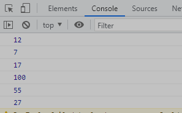
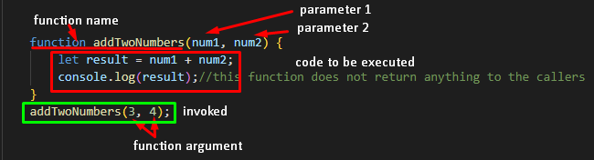

//defination of a function
//function with no parameter
function addNumbers() {
console.log(5 + 7);
}
addNumbers();//calling of function
//function with 2 parameters , num1 and num2
function addTwoNumbers(num1, num2) {
let result = num1 + num2;
console.log(result);//this function does not return anything to the callers
}
addTwoNumbers(3, 4);//calling of function with parameters
//function with 2 parameters , num1 and num2
function addTwoNumbersAndReturn(num1, num2) {
//debugger;
let result = num1 + num2;
return result;// this function return the output to the caller
console.log("this will not execute as its written after return statement");//this line will not get executed becz function has already return the control
}
addTwoNumbers(8, 9);//calling of function with parameters
let output = addTwoNumbersAndReturn(99, 1);//calling of function with parameters and accepting the return value
console.log(output);
//default value of parameter is only used if the value for that parameter is not passed by the caller
function add2NumWithReturnAndDefaultValue(num1, num2 = 5) {
return num1 + num2;
}
let out1 = add2NumWithReturnAndDefaultValue(22, 33);
console.log(out1);//55
out1 = add2NumWithReturnAndDefaultValue(22);//as num2 value is not passed so it will take default value as 5
console.log(out1);//27

Function Parts

- The code inside the function will execute when "something" invokes (calles) the function
- Function arguments are the real values received by the function when it is invoked